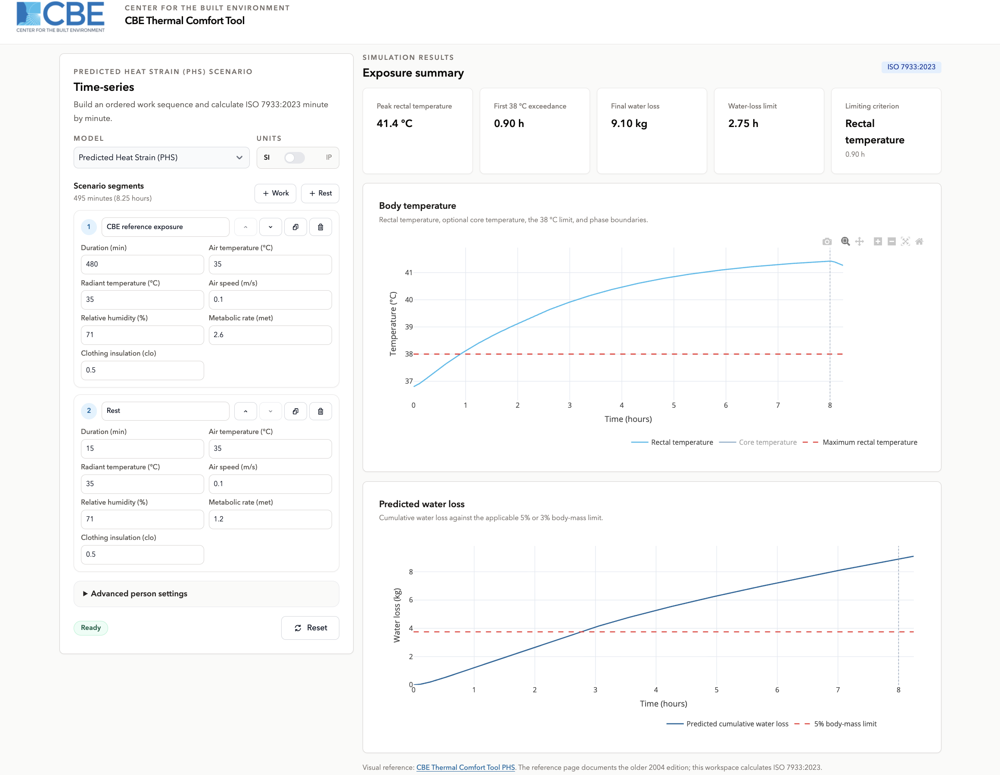
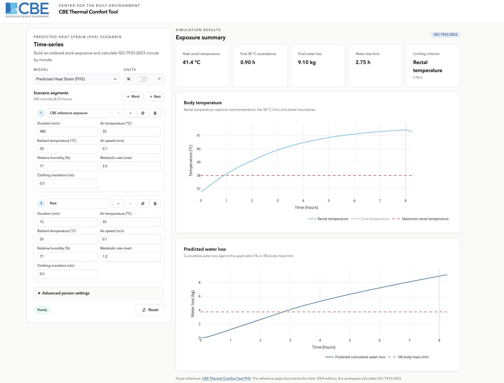
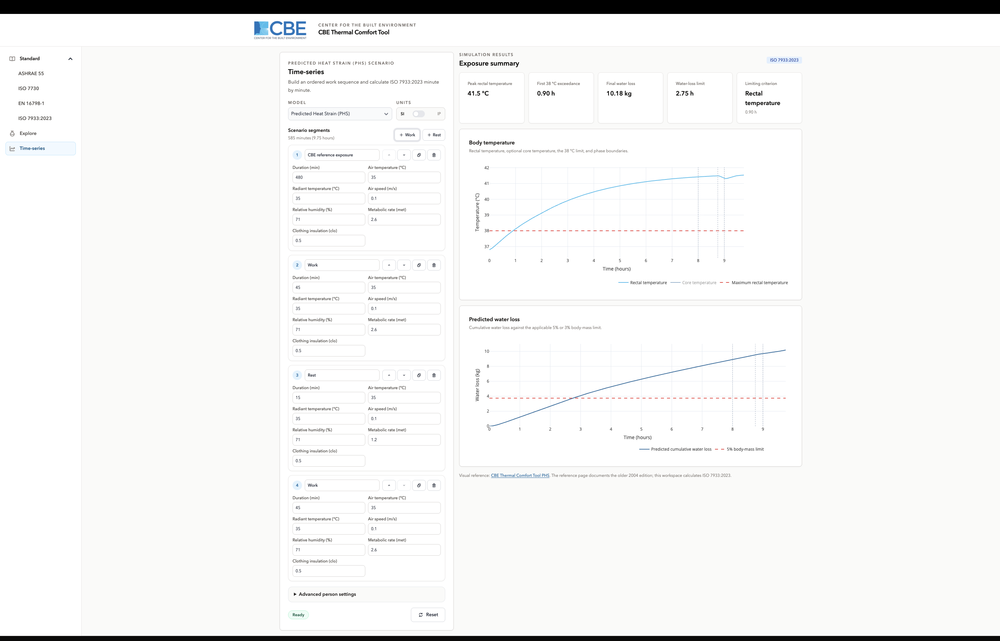

Time-series
/time-series/PHS onlySharing not available
Overview
Every other workspace evaluates one steady state. Time-series evaluates an exposure that changes: you describe a working shift as a sequence of segments, each with its own duration, environment and workload, and the tool simulates heat strain straight through the whole of it.
The layout differs from the other workspaces in one respect. The input panel holds a scenario editor rather than a single set of fields, and the results appear after the simulation runs rather than updating as you type.

Primary interface components
Model selection
The model list on this workspace has one entry: PHS (ISO 7933:2023). This is a property of the models rather than an omission. An index such as Heat Index or UTCI has no state that carries from one minute to the next, so there is nothing for a simulation to accumulate; PHS tracks core temperature and water loss over time, which is what a time series is for.
Scenario editor
A scenario is an ordered list of segments. Each segment holds its own duration and its own environment and activity values, so a shift that gets hotter after lunch, or includes a rest break, or changes clothing, can be described directly.
- Add a segment from the preset buttons, then edit its values in place.
- Segments run in order the body state at the end of one is the starting state of the next.
- The panel shows the running total duration in minutes and hours as you build.
- Reset returns the scenario to its default starting point.
Units can be switched between SI and IP here as elsewhere.

Results display
The simulation reports the values that decide a PHS verdict:
| Output | Meaning |
|---|---|
| Limiting exposure time | How long the person can remain before a limit is reached. |
| Peak rectal temperature | The highest core temperature reached across the scenario. |
| First 38 °C exceedance | When core temperature first crosses the limit, or that it was not reached. |
| Final water loss | Cumulative sweat loss at the end of the scenario. |
| Limiting criterion | Which limit core temperature or water loss was reached first. |
Visualization charts
Two charts plot the simulation over the full scenario: rectal temperature and cumulative water loss, each drawn against time with its limit line. A rest break or a change of workload is visible in the shape of the curve, which is the main reason to build a scenario rather than assess one steady state.

Assessment method
PHS simulates the body's heat balance minute by minute. Rather than asking whether conditions are comfortable, it asks how long a person can work in them before core temperature or dehydration reaches a limit so it is an occupational-safety assessment, not a comfort one.
The two limits watched are a core temperature of 38 °C and a water loss expressed as a fraction of body mass. The water-loss limit depends on whether drinking is available during the exposure; free access to water permits a larger loss. The simulation also uses body weight and height, for which the tool supplies standard defaults.
Full detail of the model, including its accepted input ranges, is on the PHS model page.
Additional capabilities
Segment presets. Common segment types can be added with one click and then edited, rather than built from nothing.
Chart export. Both result charts export as images from the chart menu currently the only way to circulate a Time-series result.
Unit selection. SI and Inch-Pound, applied across the whole scenario.
Where to go next
- ISO 7933:2023 PHS assessed as one eight-hour steady exposure.
- Explore PHS as a field chart across two quantities.